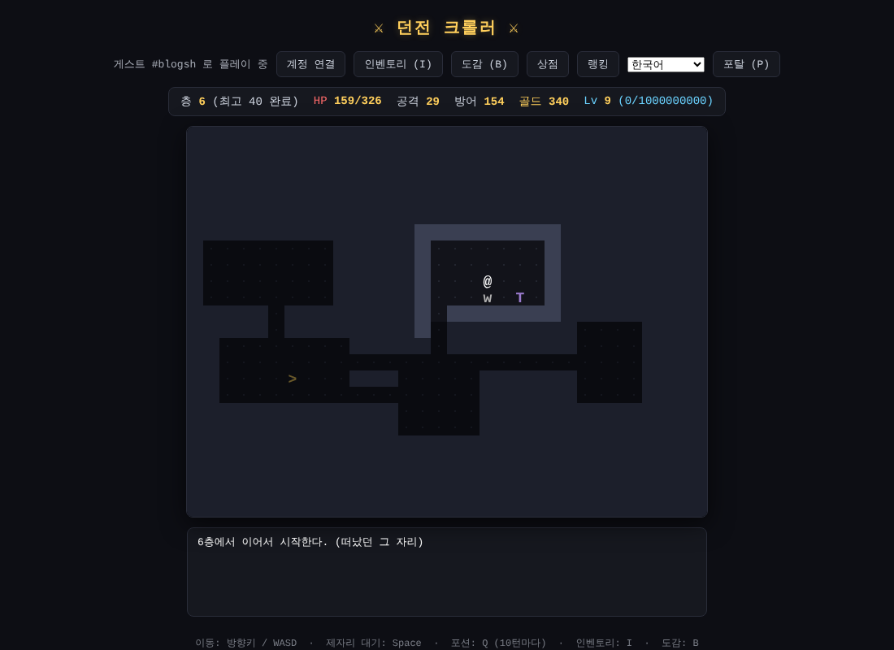

첫 삽, HTML 파일 하나로 만든 로그라이크
오늘은 던전 크롤러의 첫날이에요. Claude Code와 같이 라이브 코딩으로 처음 게임을 만들었고, 그 시작은 HTML 파일 딱 하나였어요.
HTML 파일 하나, 브라우저에서 바로
따로 설치할 것 없이 브라우저에서 바로 돌아가는 게임이에요. 장르는 턴제 로그라이크예요. 내가 한 칸 움직이면 세상도 한 번 움직이는, 한 수 한 수가 중요한 방식이에요.
첫날 만든 것들
매번 새로운 던전

- 방과 통로로 이루어진 던전이 자동으로 생성돼요
- 지도를 손으로 그리지 않고, 게임이 직접 만들어 줘요
단순한 조작
- 한 칸씩 움직여요
- 몬스터에 부딪히면 공격이에요
시야와 안개
- 캐릭터가 볼 수 있는 곳만 보여요
- 한 번 본 곳은 지도에 남아서, 탐험할수록 지도가 채워져요
깊이 내려갈수록 성장하는 재미
- 층이 깊어질수록 몬스터가 강해져요
- 던전에서 포션과 골드를 얻어요
- 몬스터를 잡으면 경험치를 얻고, 모이면 레벨 업!
첫날의 고리
첫날의 던전 크롤러는 이렇게 돌아가요.
- 던전을 탐험하고
- 몬스터와 싸우고
- 레벨을 올려 강해지고
- 더 깊은 층으로 내려가요
아직 장비도, 상점도, 랭킹도 없어요. 대신 로그라이크의 뼈대가 하루 만에 섰어요.
다음에는
바로 다음 날, 이 작은 게임에 로그인, 장비, 몬스터 20종, 상점, 랭킹이 한꺼번에 붙어요. 지금의 던전 크롤러가 궁금하다면 여기서 플레이해 보세요.